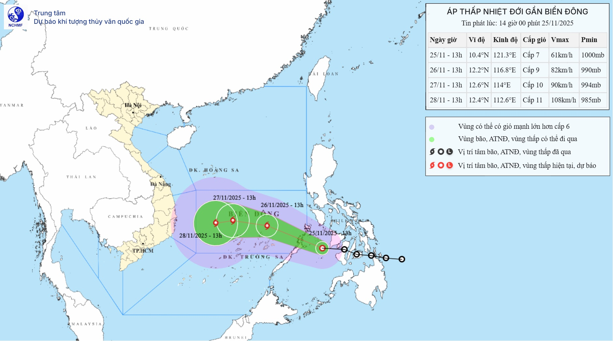

Hồi 07 giờ ngày 25/11, vị trí tâm áp thấp nhiệt đới ở vào khoảng 10,3 độ Vĩ Bắc; 123,1 độ Kinh Đông, trên khu vực miền Trung Phi-líp-pin. Sức gió mạnh nhất vùng gần tâm áp thấp nhiệt đới mạnh cấp 7 (50-61km/giờ), giật cấp 9. Di chuyển theo hướng Tây Tây Bắc với tốc độ 20-25km/h.
| Thời điểm dự báo | Hướng, tốc độ | Vị trí | Cường độ | Vùng nguy hiểm | Cấp độ rủi ro thiên tai (Khu vực chịu ảnh hưởng) |
|---|---|---|---|---|---|
| 07 giờ ngày 26/11 | Tây Tây Bắc, khoảng 20-25 km/h, đi vào Biển Đông | 11,9N-118,2E; trên vùng biển phía Đông khu vực Giữa Biển Đông | Có khả năng mạnh lên thành bão. Cấp 8, giật cấp 10 | Vĩ tuyến 9,50N-13,50N; phía Đông kinh tuyến 116,50E | Cấp 3: vùng biển phía Đông khu vực Giữa Biển Đông và vùng biển phía Đông Bắc khu vực Nam Biển Đông (bao gồm vùng biển phía Đông Bắc đặc khu Trường Sa) |
| 07 giờ ngày 27/11 | Tây Tây Bắc, khoảng 15km/h | 12,6N-115,0E; trên khu vực Giữa Biển Đông | Có khả năng mạnh thêm. Cấp 9-10, giật cấp 12 | Vĩ tuyến 9,50N-15,00N; phía Đông kinh tuyến 113,00E | Cấp 3: khu vực Giữa Biển Đông và vùng biển phía Bắc khu vực Nam Biển Đông (bao gồm vùng biển phía Bắc đặc khu Trường Sa) |
Từ 48 đến 72 giờ tiếp theo, bão di chuyển chủ yếu theo hướng Tây, mỗi giờ đi được 10-15km và tiếp tục có khả năng mạnh thêm.
| Gió mạnh, sóng lớn | |
|
Trên biển: Từ chiều tối ngày 25/11, vùng biển phía Đông khu vực Giữa Biển Đông và vùng biển phía Đông Bắc khu vực Nam Biển Đông có gió mạnh dần lên cấp 6-7; vùng gần tâm bão mạnh cấp 8-9, giật cấp 11, sóng biển cao 3,0-5,0m. Biển động rất mạnh. Cảnh báo: Trong khoảng chiều ngày 26-28/11, khu vực Giữa Biển Đông và vùng biển phía Bắc khu vực Nam Biển Đông (bao gồm vùng biển phía Bắc đặc khu Trường Sa) có khả năng chịu tác động của gió mạnh cấp 10-11, giật cấp 14. Tàu thuyền hoạt động trong các vùng nguy hiểm nói trên đều có khả năng chịu tác động của đông, lốc, gió mạnh, sóng lớn. |